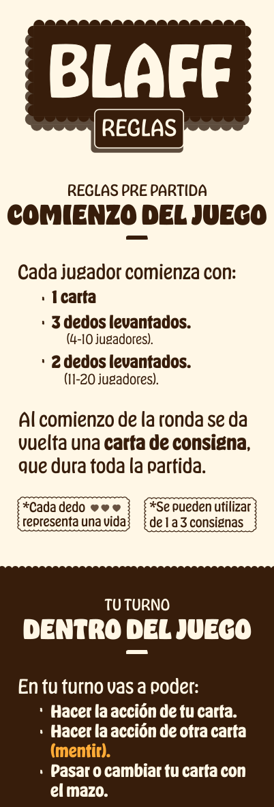
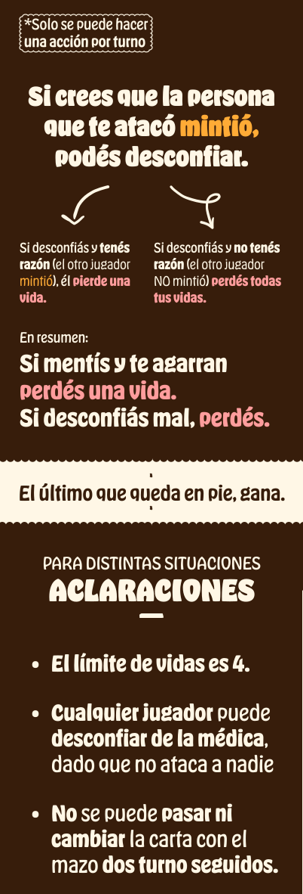
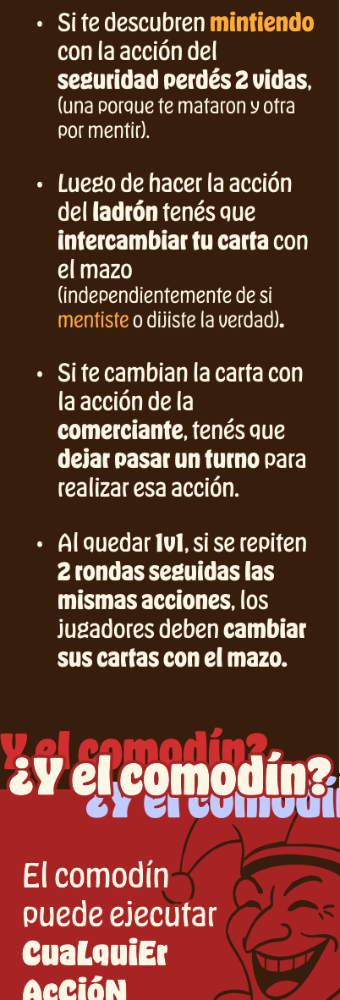
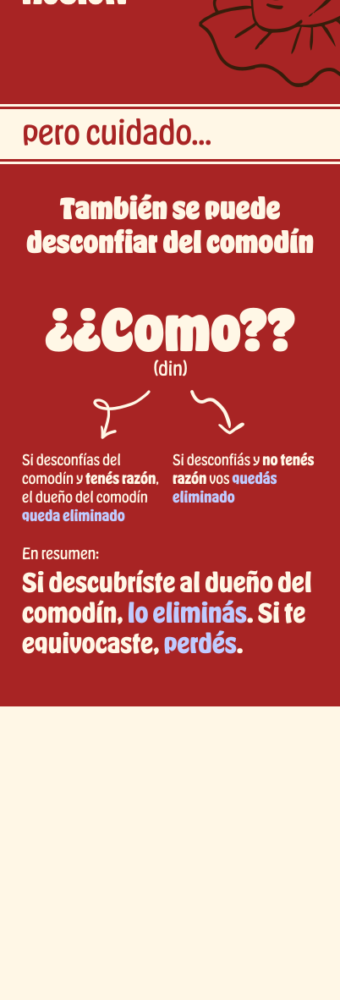
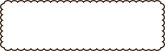
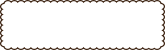

Reglas pre partida
Comienzo del juego
Cada jugador comienza con:
- 1 carta
-
3 dedos levantados. (4-10 jugadores).
-
2 dedos levantados. (11-20 jugadores).
Al comienzo de la ronda se da vuelta una carta de consigna,
que dura toda la partida.

*Cada dedo representa una vida

*Se pueden utilizar de 1 a 3 consignas
Tu turno
Dentro del juego
En tu turno vas a poder:
- Hacer la acción de tu carta.
-
Hacer la acción de otra carta (mentir).
-
Pasar o cambiar tu carta con el mazo.
*Solo se puede hacer una acción por turno
Si crees que la persona que te atacó mintió,
podés desconfiar.
Si desconfiás y tenés razón (el otro jugador
mintió), él
pierde una vida.

Si desconfiás y no tenés razón (el otro jugador
NO mintió) perdés todas tus vidas.
En resumen:
Si mentís y te agarran perdés una vida.
Si desconfiás mal, perdés.
El último que queda en pie, gana.
- El límite de vidas es 4.
-
Cualquier jugador puede desconfiar de la médica,
dado que no ataca a nadie.
-
No se puede pasar ni cambiar la carta con el mazo
dos turno seguidos.
-
Si te descubren mintiendo con la acción del
seguridad perdés 2 vidas, (una porque te mataron y otra por mentir).
-
Luego de hacer la acción del ladrón tenés que
intercambiar tu carta con el mazo
(independientemente de si mentiste o dijiste la verdad).
-
Si te cambian la carta con la acción de la comerciante,
tenés que dejar pasar un turno para realizar esa acción.
-
Al quedar 1v1, si se repiten 2 rondas seguidas las mismas acciones,
los jugadores deben cambiar sus cartas con el mazo.
¿Y el comodín?
¿Y el comodín?
El comodín puede ejecutar CuaLquiEr AcCióN
pero cuidado...
También se puede desconfiar del comodín
¿¿Como??
(din)
Si desconfías del comodín y tenés razón, el dueño del comodín
queda eliminado
Si desconfiás y no tenés razón vos
quedás eliminado
En resumen:
Si descubríste al dueño del comodín, lo eliminás.
Si te equivocaste, perdés.